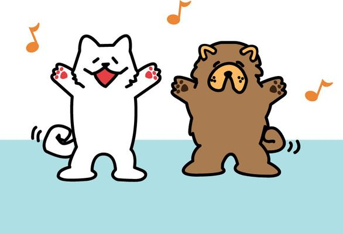

コンペに応募した作品
works>コンペに応募した作品アニメキャラデザイン
Illusutrator

犬が主役の商業用アニメキャラクターデザインとして応募しました。アニメ用キャラクターのため、動いている姿を想像できるようなものを作ろうと考えながら制作しました。かわいさを追求したつもりでしたが、キャラクターとして特徴がなさすぎたと反省しています。次に同じようなキャラクターデザインに取り組む機会があれば、もう少し勉強してから挑むべきだと思いました。
アニメキャラデザイン
Illusutrator
犬が主役の商業用アニメキャラクターデザインとして応募しました。アニメ用キャラクターのため、動いている姿を想像できるようなものを作ろうと考えながら制作しました。かわいさを追求したつもりでしたが、キャラクターとして特徴がなさすぎたと反省しています。次に同じようなキャラクターデザインに取り組む機会があれば、もう少し勉強してから挑むべきだと思いました。